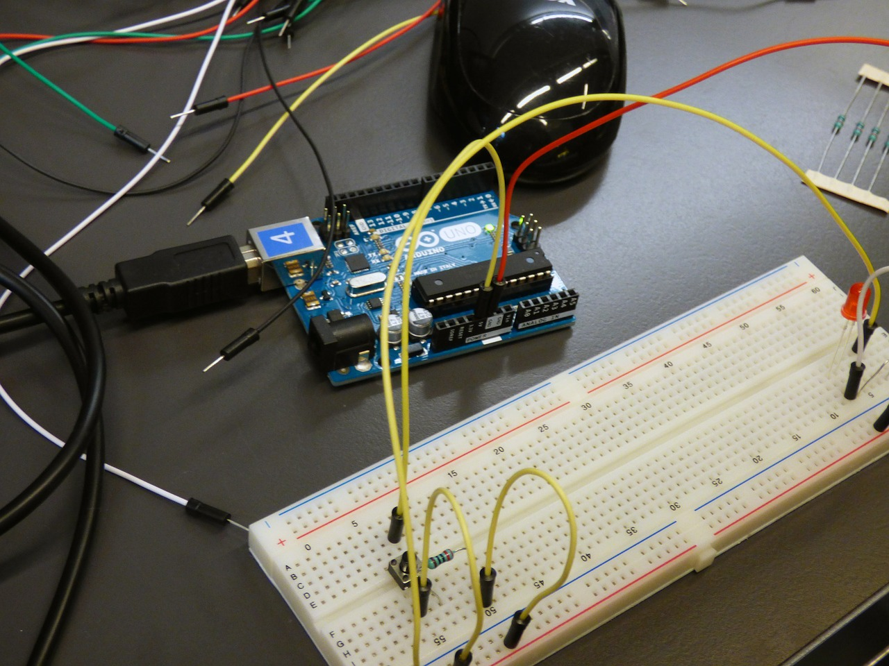
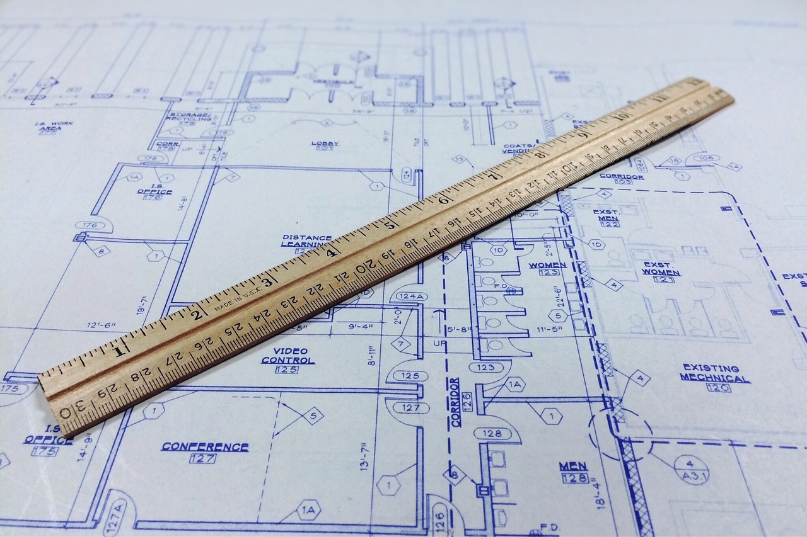

Metrolec Humble Beginning
Metrolec Enterprise was established in the Philippines sometime in 1993 with a humble beginning and started out as small trading company. During the years of our existence, Metrolec had learned to cope with various problems that affected our operation. The company had learned to cope with these by being more dedicated, disciplined and aggressive in dealing many problems in order to survive.
Technical Know How
We kept our focus on how to minimize our expenses by strategizing scientific approach, technical know-how and aggressive marketing to address it properly by maintaining on-time deliveries and completion with very minimal back-jobs. Prompt after sales service was also proven to be an effective tool to get the trust and confidence of our customers which led them to patronize our product even up to this date.
Improved relationship with our Foreign Principals
We truly value our relationship with our foreign Partners and Principals abroad by initiating steps in developing a very close working relationship with them. All technical specifications are carefully studied, verified and reviewed before orders are made to avoid inconvenience, giving only our customers what they exactly need as specified.

Workmanship is our priority
Installation and workmanship are kept to the highest priority by carefully implementing what is in the drawing plans to maintain high quality standand and ensure smooth and safe operation of the equipment. Our customers had obviously appreciated our efforts and continuously patronize our products since then. Our principal has reciprocated that appreciation by ensuring availability of spare parts and other technical considerations for a lasting operation of the equipment.
Mission Statement
"To uplift the quality standards in engineering design and installation by incorporating state of the art system for better monitoring and control."
Vision Statement
"To provide our customers with high quality electrical and electronic system for easy monitoring and control."